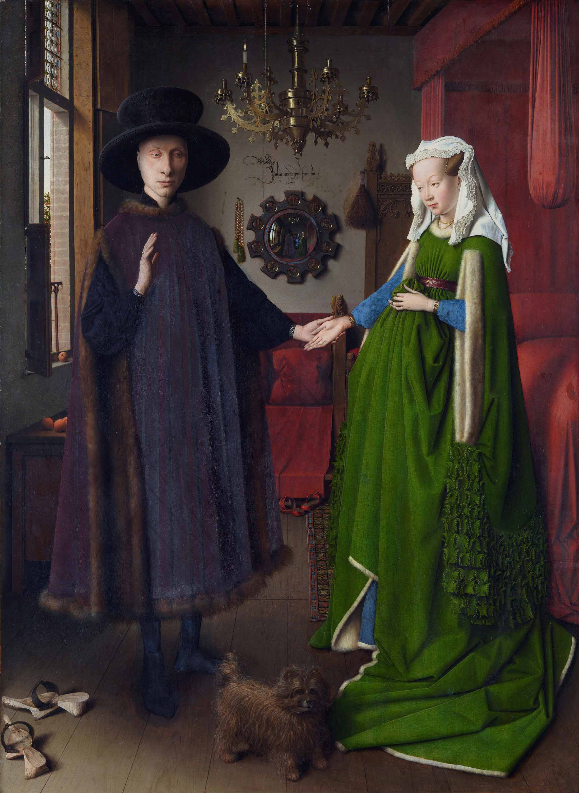

- Dog: The little pooch between the couple symbolizes fidelity, dedication, or can be viewed as a token of desire, connoting the couple’s longing to have a child. In contrast to the couple, the pup watches out to meet the look of the watcher. The canine could likewise be basically a lap pooch, a blessing and a gift from husband to wife.
- Mirror: On the off chance that you looked inside the mirror while searching for the artist’s signature, you may have spotted two more figures. They seem to stand pretty much where a watcher of this scene would stand. Painted in that reflection, one figure is likely a self-portrait of the artist himself, with his arm raised in greeting, and the other is you, the viewer! The roundels at the edge of the mirror portray Christ’s passion and death. The scenes of the living Christ are on the man’s side; the scenes of his death and resurrection are on the woman’s.
- Fruit: The oranges on the windowsill and chest may symbolize virtue and guiltlessness that reigned in the Garden of Eden before the Fall of Man. They are additionally a further sign of riches as oranges were a remarkable sight in Bruges. The fruits on the tree at the window are frequently considered to symbolize sweetness and are the Fruits of Paradise.
